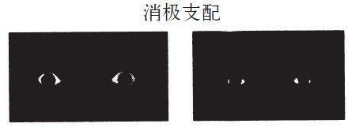

第28章 公平性—经济交易的参照点
损失厌恶这一概念绝对是心理学对行为经济学最重要的贡献。这很奇怪，因为人们虽然通过这个概念将众多结果评估为得和失，而且损失显得比获得更突出，但这个概念并没有让人们感到惊讶。阿莫斯和我经常开玩笑说，我们正在研究一项连我们的祖母那辈人都耳熟能详的课题。然而事实上，我们比那辈人了解得更多，而且能将损失厌恶与大脑双系统模式相结合进行研究，还特别将一种生理学和心理学观点应用到这些研究中，即相比于积极与靠近而言，消极与规避更能占据主导地位。我们还能通过数量惊人的各种观察研究来探索损失厌恶的结果：当商品在运输中丢失时，只有需现款支付的那部分损失才能得到补偿；大范围的改革通常会失败；职业高尔夫球手短打标准杆比短打小鸟球（高尔夫中某洞的杆数低于标准杆一杆）更精准。就算我的奶奶很有智慧，但如果我们能从她认为平淡无奇的观点中得出精准的预测的话，她应该也会感到惊奇的。

图12
在看到图12左面的图时，你的心跳会加速，也许在你还不清楚那张图有何怪异之处之前，心跳就已经加速了。过了一会儿，你也许就会认出那是双受到惊吓的人的眼睛。右面的图则表达了一种愉悦之感，微笑的脸颊上扬使眼睛变小了—当然这双眼睛还没有达到兴奋的程度。我们把这两幅图拿给做脑CT的人看。每幅图展示的时间都不到0.02秒，之后会被“视觉噪声”掩盖，这个“视觉噪声”是随机展示的黑白图片。这些观看者中没有人意识到自己曾看过那幅眼睛的图片，但他们大脑的一个部分显然意识到了：这个部分即为小脑扁桃核，尽管它在其他情绪状态下也会被激发起来，但其主要角色是担任大脑的“风险中心”。脑部影像显示，小脑扁桃核对观看者无法识别出来的有威胁性的图片有强烈的反应。关于威胁的感觉很可能是通过一个非常快的神经通道传递的，这种感觉会直接传到大脑处理情感的区域，绕过产生“视觉”意识的视觉皮质。同样的通道还会使得生气的面孔（一种潜在威胁）比快乐的面孔更快、更有效地得到处理。有些实验人员描述道，生气的面孔在众多快乐的面孔中会“凸显出来”，但快乐的面孔在众多生气的面孔中却不会很突出。人类的大脑和其他动物的大脑都包含一种机制，这种机制总会优先考虑不好的消息。将察觉掠食者所需的时间减少百分之几秒，通过这种做法，提高了动物的生存概率，使其得以繁衍生息。系统1的自动运行便体现了这种进化史。然而，人们至今尚未找到能够同样快速检测到好消息的机制。当然，我们人类和动物都对交配或进食的信号反应很机敏，因此广告商才会设计许多广告牌。不过，威胁仍然优先于机遇，而且也应该是这样。
即使是对纯粹象征性的威胁，大脑的反应也很迅速。充满情绪的字眼会引起注意，而不好的字眼（战争、犯罪）比好的字眼（和平、爱）能更快地引起注意。其实并没有真正的威胁，但只是提一下不好的字眼对系统1来说就是一种威胁。之前我们曾提到“呕吐”这个词，只是看到这个词就会自然联想起很多对真实事情的反应，包括生理上的情感流露，甚至有规避或接近、畏缩或向前的趋向。对威胁的敏感性还会延伸到对自己强烈反对的那些意见陈述的处理上来。例如，基于你对安乐死的态度，你的大脑用不到1/4秒的时间就可以在“我认为安乐死是一种可以/不可以接受的……”这句话中识别出“威胁”的意味。
保罗·罗津（Paul Rozin）是位对厌恶很有研究的心理学家，他观察到一只蟑螂可使一碗樱桃不再诱人，而一个樱桃对一碗蟑螂却不会起任何作用。他指出，负面情况在众多方面都可战胜正面情况，而且损失厌恶是负面占优势的典型例子之一。其他学者在一篇题为“坏消息比好消息强”的文章中将原因总结为以下几点：“负面情绪、不负责任的父母和糟糕的反馈比好的情况更具影响力，且人们处理坏消息时比处理好消息更彻底，我们会更在意避开负面的自我定义，而不是追求正面的自我定义，不好的印象和不好的模式比好的情况更容易形成，且不易消失。”他们引用了研究婚姻关系的著名专家约翰·葛特蒙（John Gottman）的话，他观察到长期健康的婚姻关系不仅仅依赖于寻求幸福，更在于避免负面的情况出现。葛特蒙预测一种稳健的关系需要良好的互动与不好的互动间的比例至少为5 ∶1。其他社会方面的不协调则更吸引人，我们都知道，也许一件事就会毁掉数年时间培养的友谊。
我们生来就能对好与坏的某些区别进行分辨。婴儿来到这个世界上，就知道苦是不好的，（某种程度的）甜是好的。然而在很多情况下，好和坏之间的界限是种参照点，会随着时间的改变而改变，而且依赖于当时的情况。假设你在一个寒冷的晚上来到乡村，适逢大雨，而身上的衣服又不足以挡雨，衣服都湿透了。不凑巧的是，冷风又起，这下真的是糟糕透顶。就在你不知如何是好时，发现了一大块岩石可暂时挡风避雨。生物学家米歇尔·卡巴纳克（Michel Cabanac）说这种体验会令人非常快乐，因为这种体验与我们平时可能感到快乐的原因相似，都指明了生理状况的重要改善方向。当然，这种感到获救的快乐感不会持续很长时间，不一会儿你就会在岩石后面冻得哆嗦起来。新遭受的痛苦又会驱使你去寻找更好的庇护之所。